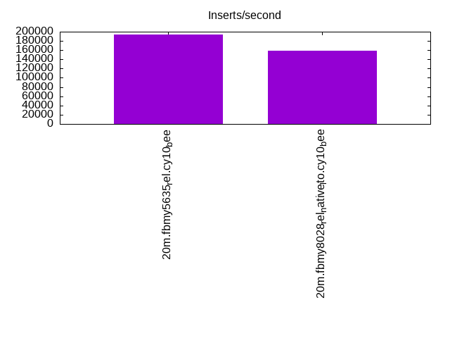
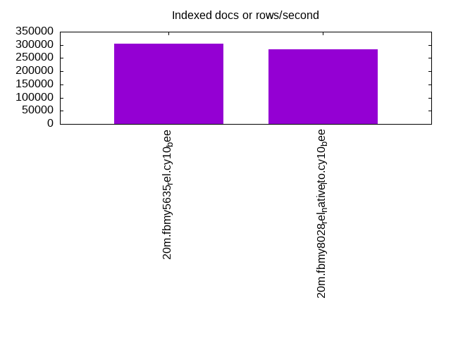
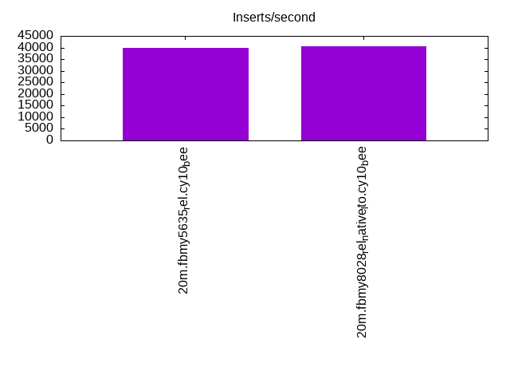
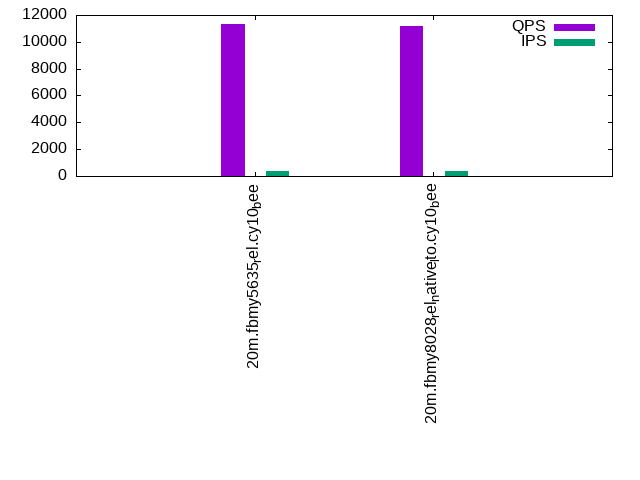
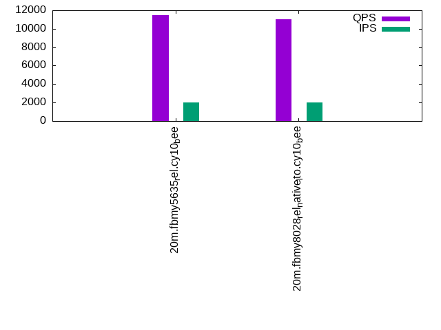
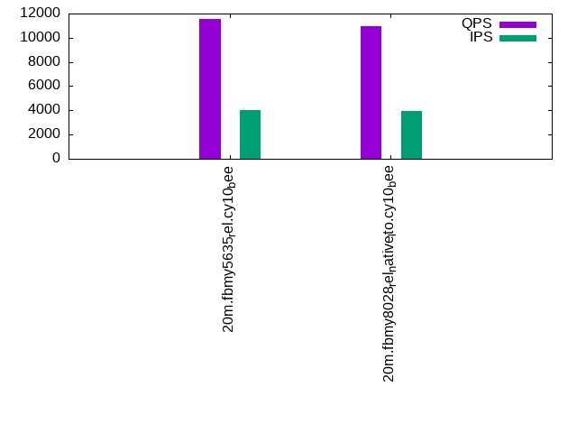

This is a report for the insert benchmark with 20M docs and 4 client(s). It is generated by scripts (bash, awk, sed) and Tufte might not be impressed. An overview of the insert benchmark is here and a short update is here. Below, by DBMS, I mean DBMS+version.config. An example is my8020.c10b40 where my means MySQL, 8020 is version 8.0.20 and c10b40 is the name for the configuration file.
The test server has 8 AMD cores, 16G RAM and an NVMe SSD. It is described here as the Beelink. The benchmark was run with 4 clients and there were 1 or 3 connections per client (1 for queries or inserts without rate limits, 1+1 for rate limited inserts+deletes). It uses 4 tables, 1 per client. It loads 20M rows per table without secondary indexes, creates secondary indexes, then inserts 50M rows per table with a delete per insert to avoid growing the table. It then does 3 read+write tests for 1800s each that do queries as fast as possible with 100, 500 and then 1000 inserts/second/client concurrent with the queries and 1000 deletes/second to avoid growing the table. The database is cached by the storage engine and the only IO is for writes. Clients and the DBMS share one server. The per-database configs are in the per-database subdirectories here.
The tested DBMS are:
The numbers are inserts/s for l.i0 and l.i1, indexed docs (or rows) /s for l.x and queries/s for q*.2. The values are the average rate over the entire test for inserts (IPS) and queries (QPS). The range of values for IPS and QPS is split into 3 parts: bottom 25%, middle 50%, top 25%. Values in the bottom 25% have a red background, values in the top 25% have a green background and values in the middle have no color. A gray background is used for values that can be ignored because the DBMS did not sustain the target insert rate. Red backgrounds are not used when the minimum value is within 80% of the max value.
| dbms | l.i0 | l.x | l.i1 | q100.1 | q500.1 | q1000.1 |
|---|---|---|---|---|---|---|
| 20m.fbmy5635_rel.cy10_bee | 194175 | 304545 | 39877 | 11298 | 11497 | 11557 |
| 20m.fbmy8028_rel_native_lto.cy10_bee | 158730 | 283098 | 40530 | 11146 | 11010 | 10949 |
This table has relative throughput, throughput for the DBMS relative to the DBMS in the first line, using the absolute throughput from the previous table.
| dbms | l.i0 | l.x | l.i1 | q100.1 | q500.1 | q1000.1 |
|---|---|---|---|---|---|---|
| 20m.fbmy5635_rel.cy10_bee | 1.00 | 1.00 | 1.00 | 1.00 | 1.00 | 1.00 |
| 20m.fbmy8028_rel_native_lto.cy10_bee | 0.82 | 0.93 | 1.02 | 0.99 | 0.96 | 0.95 |
This lists the average rate of inserts/s for the tests that do inserts concurrent with queries. For such tests the query rate is listed in the table above. The read+write tests are setup so that the insert rate should match the target rate every second. Cells that are not at least 95% of the target have a red background to indicate a failure to satisfy the target.
| dbms | q100.1 | q500.1 | q1000.1 |
|---|---|---|---|
| fbmy5635_rel.cy10_bee | 398 | 1993 | 3989 |
| fbmy8028_rel_native_lto.cy10_bee | 397 | 1993 | 3987 |
| target | 400 | 2000 | 4000 |
l.i0: load without secondary indexes. Graphs for performance per 1-second interval are here.
Average throughput:
Insert response time histogram: each cell has the percentage of responses that take <= the time in the header and max is the max response time in seconds. For the max column values in the top 25% of the range have a red background and in the bottom 25% of the range have a green background. The red background is not used when the min value is within 80% of the max value.
| dbms | 256us | 1ms | 4ms | 16ms | 64ms | 256ms | 1s | 4s | 16s | gt | max |
|---|---|---|---|---|---|---|---|---|---|---|---|
| fbmy5635_rel.cy10_bee | 99.763 | 0.223 | 0.002 | 0.013 | 0.108 | ||||||
| fbmy8028_rel_native_lto.cy10_bee | 99.305 | 0.473 | 0.209 | 0.013 | 0.119 |
Performance metrics for the DBMS listed above. Some are normalized by throughput, others are not. Legend for results is here.
ips qps rps rmbps wps wmbps rpq rkbpq wpi wkbpi csps cpups cspq cpupq dbgb1 dbgb2 rss maxop p50 p99 tag 194175 0 0 0.0 123.2 51.3 0.000 0.000 0.001 0.270 20104 71.7 0.104 30 0.9 1.9 0.4 0.108 54540 3496 20m.fbmy5635_rel.cy10_bee 158730 0 0 0.0 112.4 44.3 0.000 0.000 0.001 0.286 16144 65.9 0.102 33 0.7 1.9 0.7 0.119 43052 35573 20m.fbmy8028_rel_native_lto.cy10_bee
l.x: create secondary indexes.
Average throughput:
Performance metrics for the DBMS listed above. Some are normalized by throughput, others are not. Legend for results is here.
ips qps rps rmbps wps wmbps rpq rkbpq wpi wkbpi csps cpups cspq cpupq dbgb1 dbgb2 rss maxop p50 p99 tag 304545 0 1 0.0 135.7 56.2 0.000 0.000 0.000 0.189 666 46.9 0.002 12 1.4 2.4 2.1 0.004 NA NA 20m.fbmy5635_rel.cy10_bee 283098 0 1 0.0 114.3 47.4 0.000 0.000 0.000 0.171 872 45.2 0.003 13 1.4 2.7 2.2 0.013 NA NA 20m.fbmy8028_rel_native_lto.cy10_bee
l.i1: continue load after secondary indexes created. Graphs for performance per 1-second interval are here.
Average throughput:
Insert response time histogram: each cell has the percentage of responses that take <= the time in the header and max is the max response time in seconds. For the max column values in the top 25% of the range have a red background and in the bottom 25% of the range have a green background. The red background is not used when the min value is within 80% of the max value.
| dbms | 256us | 1ms | 4ms | 16ms | 64ms | 256ms | 1s | 4s | 16s | gt | max |
|---|---|---|---|---|---|---|---|---|---|---|---|
| fbmy5635_rel.cy10_bee | 24.317 | 75.658 | 0.017 | 0.008 | 0.126 | ||||||
| fbmy8028_rel_native_lto.cy10_bee | 29.020 | 70.845 | 0.123 | 0.012 | 0.128 |
Delete response time histogram: each cell has the percentage of responses that take <= the time in the header and max is the max response time in seconds. For the max column values in the top 25% of the range have a red background and in the bottom 25% of the range have a green background. The red background is not used when the min value is within 80% of the max value.
| dbms | 256us | 1ms | 4ms | 16ms | 64ms | 256ms | 1s | 4s | 16s | gt | max |
|---|---|---|---|---|---|---|---|---|---|---|---|
| fbmy5635_rel.cy10_bee | 22.001 | 77.970 | 0.020 | 0.009 | 0.126 | ||||||
| fbmy8028_rel_native_lto.cy10_bee | 27.319 | 72.543 | 0.126 | 0.012 | 0.174 |
Performance metrics for the DBMS listed above. Some are normalized by throughput, others are not. Legend for results is here.
ips qps rps rmbps wps wmbps rpq rkbpq wpi wkbpi csps cpups cspq cpupq dbgb1 dbgb2 rss maxop p50 p99 tag 39877 0 140 2.4 145.7 57.5 0.004 0.062 0.004 1.478 18782 68.2 0.471 137 5.5 5.8 6.5 0.126 10039 8790 20m.fbmy5635_rel.cy10_bee 40530 0 185 5.6 156.6 59.3 0.005 0.143 0.004 1.498 16939 73.4 0.418 145 4.9 5.3 7.4 0.128 10143 8790 20m.fbmy8028_rel_native_lto.cy10_bee
q100.1: range queries with 100 insert/s per client. Graphs for performance per 1-second interval are here.
Average throughput:
Query response time histogram: each cell has the percentage of responses that take <= the time in the header and max is the max response time in seconds. For max values in the top 25% of the range have a red background and in the bottom 25% of the range have a green background. The red background is not used when the min value is within 80% of the max value.
| dbms | 256us | 1ms | 4ms | 16ms | 64ms | 256ms | 1s | 4s | 16s | gt | max |
|---|---|---|---|---|---|---|---|---|---|---|---|
| fbmy5635_rel.cy10_bee | 16.766 | 83.214 | 0.018 | 0.001 | nonzero | 0.020 | |||||
| fbmy8028_rel_native_lto.cy10_bee | 17.423 | 82.552 | 0.024 | 0.002 | nonzero | 0.016 |
Insert response time histogram: each cell has the percentage of responses that take <= the time in the header and max is the max response time in seconds. For max values in the top 25% of the range have a red background and in the bottom 25% of the range have a green background. The red background is not used when the min value is within 80% of the max value.
| dbms | 256us | 1ms | 4ms | 16ms | 64ms | 256ms | 1s | 4s | 16s | gt | max |
|---|---|---|---|---|---|---|---|---|---|---|---|
| fbmy5635_rel.cy10_bee | 98.764 | 1.236 | 0.014 | ||||||||
| fbmy8028_rel_native_lto.cy10_bee | 98.840 | 1.118 | 0.042 | 0.022 |
Delete response time histogram: each cell has the percentage of responses that take <= the time in the header and max is the max response time in seconds. For max values in the top 25% of the range have a red background and in the bottom 25% of the range have a green background. The red background is not used when the min value is within 80% of the max value.
| dbms | 256us | 1ms | 4ms | 16ms | 64ms | 256ms | 1s | 4s | 16s | gt | max |
|---|---|---|---|---|---|---|---|---|---|---|---|
| fbmy5635_rel.cy10_bee | 87.951 | 12.014 | 0.035 | 0.031 | |||||||
| fbmy8028_rel_native_lto.cy10_bee | 83.431 | 16.389 | 0.181 | 0.022 |
Performance metrics for the DBMS listed above. Some are normalized by throughput, others are not. Legend for results is here.
ips qps rps rmbps wps wmbps rpq rkbpq wpi wkbpi csps cpups cspq cpupq dbgb1 dbgb2 rss maxop p50 p99 tag 398 11298 59 1.5 8.0 1.9 0.005 0.135 0.020 4.802 42768 50.5 3.785 358 1.6 2.0 10.3 0.020 2765 2397 20m.fbmy5635_rel.cy10_bee 397 11146 131 3.1 8.9 2.2 0.012 0.284 0.022 5.556 42439 51.2 3.807 367 1.6 2.2 10.9 0.016 2813 1998 20m.fbmy8028_rel_native_lto.cy10_bee
q500.1: range queries with 500 insert/s per client. Graphs for performance per 1-second interval are here.
Average throughput:
Query response time histogram: each cell has the percentage of responses that take <= the time in the header and max is the max response time in seconds. For max values in the top 25% of the range have a red background and in the bottom 25% of the range have a green background. The red background is not used when the min value is within 80% of the max value.
| dbms | 256us | 1ms | 4ms | 16ms | 64ms | 256ms | 1s | 4s | 16s | gt | max |
|---|---|---|---|---|---|---|---|---|---|---|---|
| fbmy5635_rel.cy10_bee | 19.018 | 80.913 | 0.065 | 0.005 | nonzero | 0.019 | |||||
| fbmy8028_rel_native_lto.cy10_bee | 13.961 | 85.962 | 0.068 | 0.009 | nonzero | 0.024 |
Insert response time histogram: each cell has the percentage of responses that take <= the time in the header and max is the max response time in seconds. For max values in the top 25% of the range have a red background and in the bottom 25% of the range have a green background. The red background is not used when the min value is within 80% of the max value.
| dbms | 256us | 1ms | 4ms | 16ms | 64ms | 256ms | 1s | 4s | 16s | gt | max |
|---|---|---|---|---|---|---|---|---|---|---|---|
| fbmy5635_rel.cy10_bee | 96.497 | 3.478 | 0.025 | 0.047 | |||||||
| fbmy8028_rel_native_lto.cy10_bee | 91.926 | 8.024 | 0.046 | 0.004 | 0.084 |
Delete response time histogram: each cell has the percentage of responses that take <= the time in the header and max is the max response time in seconds. For max values in the top 25% of the range have a red background and in the bottom 25% of the range have a green background. The red background is not used when the min value is within 80% of the max value.
| dbms | 256us | 1ms | 4ms | 16ms | 64ms | 256ms | 1s | 4s | 16s | gt | max |
|---|---|---|---|---|---|---|---|---|---|---|---|
| fbmy5635_rel.cy10_bee | 94.463 | 5.496 | 0.042 | 0.048 | |||||||
| fbmy8028_rel_native_lto.cy10_bee | 89.826 | 10.131 | 0.037 | 0.006 | 0.090 |
Performance metrics for the DBMS listed above. Some are normalized by throughput, others are not. Legend for results is here.
ips qps rps rmbps wps wmbps rpq rkbpq wpi wkbpi csps cpups cspq cpupq dbgb1 dbgb2 rss maxop p50 p99 tag 1993 11497 25 1.2 12.4 3.7 0.002 0.102 0.006 1.910 42843 52.2 3.726 363 1.7 2.8 10.8 0.019 2861 2526 20m.fbmy5635_rel.cy10_bee 1993 11010 133 2.1 12.3 3.5 0.012 0.198 0.006 1.815 41488 52.6 3.768 382 1.7 3.0 11.0 0.024 2749 2269 20m.fbmy8028_rel_native_lto.cy10_bee
q1000.1: range queries with 1000 insert/s per client. Graphs for performance per 1-second interval are here.
Average throughput:
Query response time histogram: each cell has the percentage of responses that take <= the time in the header and max is the max response time in seconds. For max values in the top 25% of the range have a red background and in the bottom 25% of the range have a green background. The red background is not used when the min value is within 80% of the max value.
| dbms | 256us | 1ms | 4ms | 16ms | 64ms | 256ms | 1s | 4s | 16s | gt | max |
|---|---|---|---|---|---|---|---|---|---|---|---|
| fbmy5635_rel.cy10_bee | 18.029 | 81.783 | 0.175 | 0.013 | nonzero | 0.017 | |||||
| fbmy8028_rel_native_lto.cy10_bee | 12.016 | 87.859 | 0.112 | 0.012 | nonzero | 0.017 |
Insert response time histogram: each cell has the percentage of responses that take <= the time in the header and max is the max response time in seconds. For max values in the top 25% of the range have a red background and in the bottom 25% of the range have a green background. The red background is not used when the min value is within 80% of the max value.
| dbms | 256us | 1ms | 4ms | 16ms | 64ms | 256ms | 1s | 4s | 16s | gt | max |
|---|---|---|---|---|---|---|---|---|---|---|---|
| fbmy5635_rel.cy10_bee | 93.663 | 6.314 | 0.024 | 0.057 | |||||||
| fbmy8028_rel_native_lto.cy10_bee | 98.383 | 1.606 | 0.008 | 0.003 | 0.094 |
Delete response time histogram: each cell has the percentage of responses that take <= the time in the header and max is the max response time in seconds. For max values in the top 25% of the range have a red background and in the bottom 25% of the range have a green background. The red background is not used when the min value is within 80% of the max value.
| dbms | 256us | 1ms | 4ms | 16ms | 64ms | 256ms | 1s | 4s | 16s | gt | max |
|---|---|---|---|---|---|---|---|---|---|---|---|
| fbmy5635_rel.cy10_bee | 92.652 | 7.316 | 0.032 | 0.057 | |||||||
| fbmy8028_rel_native_lto.cy10_bee | 97.936 | 2.051 | 0.010 | 0.003 | 0.088 |
Performance metrics for the DBMS listed above. Some are normalized by throughput, others are not. Legend for results is here.
ips qps rps rmbps wps wmbps rpq rkbpq wpi wkbpi csps cpups cspq cpupq dbgb1 dbgb2 rss maxop p50 p99 tag 3989 11557 54 2.2 23.6 7.5 0.005 0.199 0.006 1.935 42320 55.2 3.662 382 1.7 2.4 10.7 0.017 2845 2494 20m.fbmy5635_rel.cy10_bee 3987 10949 193 3.9 25.4 7.7 0.018 0.363 0.006 1.971 40098 56.1 3.662 410 1.7 2.6 11.0 0.017 2719 2238 20m.fbmy8028_rel_native_lto.cy10_bee
l.i0: load without secondary indexes
Performance metrics for all DBMS, not just the ones listed above. Some are normalized by throughput, others are not. Legend for results is here.
ips qps rps rmbps wps wmbps rpq rkbpq wpi wkbpi csps cpups cspq cpupq dbgb1 dbgb2 rss maxop p50 p99 tag 194175 0 0 0.0 123.2 51.3 0.000 0.000 0.001 0.270 20104 71.7 0.104 30 0.9 1.9 0.4 0.108 54540 3496 20m.fbmy5635_rel.cy10_bee 158730 0 0 0.0 112.4 44.3 0.000 0.000 0.001 0.286 16144 65.9 0.102 33 0.7 1.9 0.7 0.119 43052 35573 20m.fbmy8028_rel_native_lto.cy10_bee
l.x: create secondary indexes
Performance metrics for all DBMS, not just the ones listed above. Some are normalized by throughput, others are not. Legend for results is here.
ips qps rps rmbps wps wmbps rpq rkbpq wpi wkbpi csps cpups cspq cpupq dbgb1 dbgb2 rss maxop p50 p99 tag 304545 0 1 0.0 135.7 56.2 0.000 0.000 0.000 0.189 666 46.9 0.002 12 1.4 2.4 2.1 0.004 NA NA 20m.fbmy5635_rel.cy10_bee 283098 0 1 0.0 114.3 47.4 0.000 0.000 0.000 0.171 872 45.2 0.003 13 1.4 2.7 2.2 0.013 NA NA 20m.fbmy8028_rel_native_lto.cy10_bee
l.i1: continue load after secondary indexes created
Performance metrics for all DBMS, not just the ones listed above. Some are normalized by throughput, others are not. Legend for results is here.
ips qps rps rmbps wps wmbps rpq rkbpq wpi wkbpi csps cpups cspq cpupq dbgb1 dbgb2 rss maxop p50 p99 tag 39877 0 140 2.4 145.7 57.5 0.004 0.062 0.004 1.478 18782 68.2 0.471 137 5.5 5.8 6.5 0.126 10039 8790 20m.fbmy5635_rel.cy10_bee 40530 0 185 5.6 156.6 59.3 0.005 0.143 0.004 1.498 16939 73.4 0.418 145 4.9 5.3 7.4 0.128 10143 8790 20m.fbmy8028_rel_native_lto.cy10_bee
q100.1: range queries with 100 insert/s per client
Performance metrics for all DBMS, not just the ones listed above. Some are normalized by throughput, others are not. Legend for results is here.
ips qps rps rmbps wps wmbps rpq rkbpq wpi wkbpi csps cpups cspq cpupq dbgb1 dbgb2 rss maxop p50 p99 tag 398 11298 59 1.5 8.0 1.9 0.005 0.135 0.020 4.802 42768 50.5 3.785 358 1.6 2.0 10.3 0.020 2765 2397 20m.fbmy5635_rel.cy10_bee 397 11146 131 3.1 8.9 2.2 0.012 0.284 0.022 5.556 42439 51.2 3.807 367 1.6 2.2 10.9 0.016 2813 1998 20m.fbmy8028_rel_native_lto.cy10_bee
q500.1: range queries with 500 insert/s per client
Performance metrics for all DBMS, not just the ones listed above. Some are normalized by throughput, others are not. Legend for results is here.
ips qps rps rmbps wps wmbps rpq rkbpq wpi wkbpi csps cpups cspq cpupq dbgb1 dbgb2 rss maxop p50 p99 tag 1993 11497 25 1.2 12.4 3.7 0.002 0.102 0.006 1.910 42843 52.2 3.726 363 1.7 2.8 10.8 0.019 2861 2526 20m.fbmy5635_rel.cy10_bee 1993 11010 133 2.1 12.3 3.5 0.012 0.198 0.006 1.815 41488 52.6 3.768 382 1.7 3.0 11.0 0.024 2749 2269 20m.fbmy8028_rel_native_lto.cy10_bee
q1000.1: range queries with 1000 insert/s per client
Performance metrics for all DBMS, not just the ones listed above. Some are normalized by throughput, others are not. Legend for results is here.
ips qps rps rmbps wps wmbps rpq rkbpq wpi wkbpi csps cpups cspq cpupq dbgb1 dbgb2 rss maxop p50 p99 tag 3989 11557 54 2.2 23.6 7.5 0.005 0.199 0.006 1.935 42320 55.2 3.662 382 1.7 2.4 10.7 0.017 2845 2494 20m.fbmy5635_rel.cy10_bee 3987 10949 193 3.9 25.4 7.7 0.018 0.363 0.006 1.971 40098 56.1 3.662 410 1.7 2.6 11.0 0.017 2719 2238 20m.fbmy8028_rel_native_lto.cy10_bee
Insert response time histogram
256us 1ms 4ms 16ms 64ms 256ms 1s 4s 16s gt max tag 0.000 0.000 99.763 0.223 0.002 0.013 0.000 0.000 0.000 0.000 0.108 fbmy5635_rel.cy10_bee 0.000 0.000 99.305 0.473 0.209 0.013 0.000 0.000 0.000 0.000 0.119 fbmy8028_rel_native_lto.cy10_bee
TODO - determine whether there is data for create index response time
Insert response time histogram
256us 1ms 4ms 16ms 64ms 256ms 1s 4s 16s gt max tag 0.000 0.000 24.317 75.658 0.017 0.008 0.000 0.000 0.000 0.000 0.126 fbmy5635_rel.cy10_bee 0.000 0.000 29.020 70.845 0.123 0.012 0.000 0.000 0.000 0.000 0.128 fbmy8028_rel_native_lto.cy10_bee
Delete response time histogram
256us 1ms 4ms 16ms 64ms 256ms 1s 4s 16s gt max tag 0.000 0.000 22.001 77.970 0.020 0.009 0.000 0.000 0.000 0.000 0.126 fbmy5635_rel.cy10_bee 0.000 0.000 27.319 72.543 0.126 0.012 0.000 0.000 0.000 0.000 0.174 fbmy8028_rel_native_lto.cy10_bee
Query response time histogram
256us 1ms 4ms 16ms 64ms 256ms 1s 4s 16s gt max tag 16.766 83.214 0.018 0.001 nonzero 0.000 0.000 0.000 0.000 0.000 0.020 fbmy5635_rel.cy10_bee 17.423 82.552 0.024 0.002 nonzero 0.000 0.000 0.000 0.000 0.000 0.016 fbmy8028_rel_native_lto.cy10_bee
Insert response time histogram
256us 1ms 4ms 16ms 64ms 256ms 1s 4s 16s gt max tag 0.000 0.000 98.764 1.236 0.000 0.000 0.000 0.000 0.000 0.000 0.014 fbmy5635_rel.cy10_bee 0.000 0.000 98.840 1.118 0.042 0.000 0.000 0.000 0.000 0.000 0.022 fbmy8028_rel_native_lto.cy10_bee
Delete response time histogram
256us 1ms 4ms 16ms 64ms 256ms 1s 4s 16s gt max tag 0.000 0.000 87.951 12.014 0.035 0.000 0.000 0.000 0.000 0.000 0.031 fbmy5635_rel.cy10_bee 0.000 0.000 83.431 16.389 0.181 0.000 0.000 0.000 0.000 0.000 0.022 fbmy8028_rel_native_lto.cy10_bee
Query response time histogram
256us 1ms 4ms 16ms 64ms 256ms 1s 4s 16s gt max tag 19.018 80.913 0.065 0.005 nonzero 0.000 0.000 0.000 0.000 0.000 0.019 fbmy5635_rel.cy10_bee 13.961 85.962 0.068 0.009 nonzero 0.000 0.000 0.000 0.000 0.000 0.024 fbmy8028_rel_native_lto.cy10_bee
Insert response time histogram
256us 1ms 4ms 16ms 64ms 256ms 1s 4s 16s gt max tag 0.000 0.000 96.497 3.478 0.025 0.000 0.000 0.000 0.000 0.000 0.047 fbmy5635_rel.cy10_bee 0.000 0.000 91.926 8.024 0.046 0.004 0.000 0.000 0.000 0.000 0.084 fbmy8028_rel_native_lto.cy10_bee
Delete response time histogram
256us 1ms 4ms 16ms 64ms 256ms 1s 4s 16s gt max tag 0.000 0.000 94.463 5.496 0.042 0.000 0.000 0.000 0.000 0.000 0.048 fbmy5635_rel.cy10_bee 0.000 0.000 89.826 10.131 0.037 0.006 0.000 0.000 0.000 0.000 0.090 fbmy8028_rel_native_lto.cy10_bee
Query response time histogram
256us 1ms 4ms 16ms 64ms 256ms 1s 4s 16s gt max tag 18.029 81.783 0.175 0.013 nonzero 0.000 0.000 0.000 0.000 0.000 0.017 fbmy5635_rel.cy10_bee 12.016 87.859 0.112 0.012 nonzero 0.000 0.000 0.000 0.000 0.000 0.017 fbmy8028_rel_native_lto.cy10_bee
Insert response time histogram
256us 1ms 4ms 16ms 64ms 256ms 1s 4s 16s gt max tag 0.000 0.000 93.663 6.314 0.024 0.000 0.000 0.000 0.000 0.000 0.057 fbmy5635_rel.cy10_bee 0.000 0.000 98.383 1.606 0.008 0.003 0.000 0.000 0.000 0.000 0.094 fbmy8028_rel_native_lto.cy10_bee
Delete response time histogram
256us 1ms 4ms 16ms 64ms 256ms 1s 4s 16s gt max tag 0.000 0.000 92.652 7.316 0.032 0.000 0.000 0.000 0.000 0.000 0.057 fbmy5635_rel.cy10_bee 0.000 0.000 97.936 2.051 0.010 0.003 0.000 0.000 0.000 0.000 0.088 fbmy8028_rel_native_lto.cy10_bee